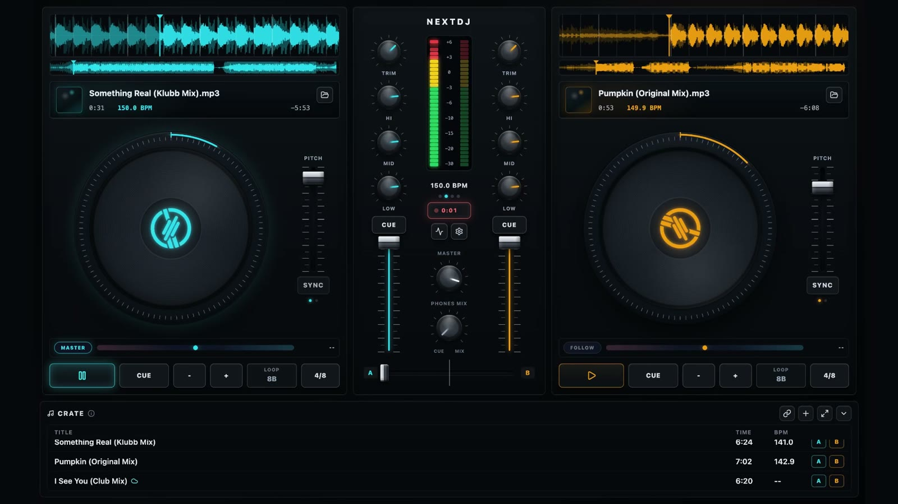

Decks
Waveforms, jog wheels, pitch, sync, cue, loops, and hot cues.
Two deck control with overview and zoomed waveforms tuned for quick track reading.
Open-source desktop DJ console
Mix local tracks with two tactile decks, live waveforms, cue monitoring, BPM sync, loops, hot cues, recording, and a focused hardware-inspired console.
Built for local sets
NextDJ keeps the session in one place: decks on the sides, mixer in the center, crate at the bottom. Load files, shape the transition, monitor cues, and record without leaving the console.
Two deck control with overview and zoomed waveforms tuned for quick track reading.
Shape the blend with visual level feedback and a central master beat reference.
Choose supported output devices and extend playlist imports through the local provider API.

Alpha downloads
These early binaries are unsigned pre-releases. macOS and Windows can show operating-system warnings. Build from source if you prefer to inspect the app before running it.
DMG build for arm64 Macs.
Installer for 64-bit Windows.
Portable AppImage for common Linux desktops.
The full release includes macOS x64 builds, macOS ZIP files, Windows portable EXE, Linux DEB, and SHA256 checksums.
Use npm because this repository commits `package-lock.json`.
npm install
npm run dev